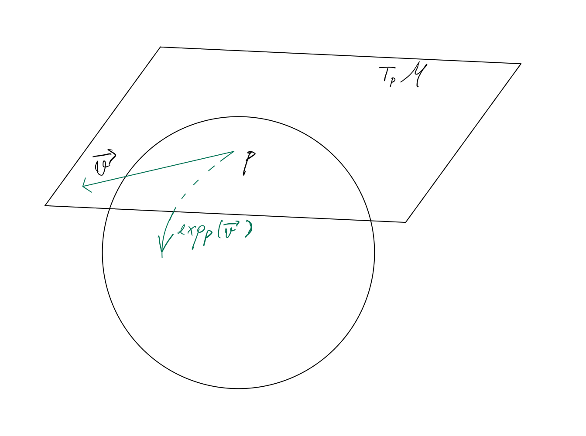
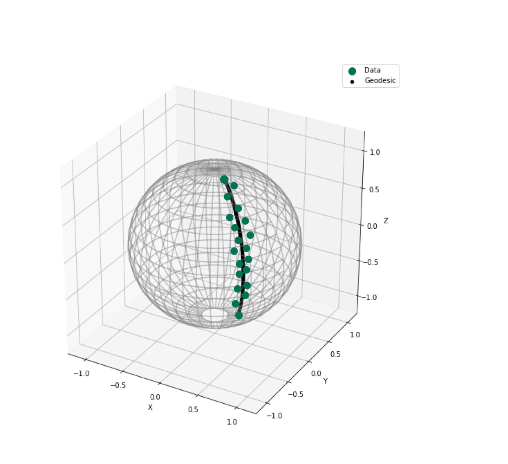
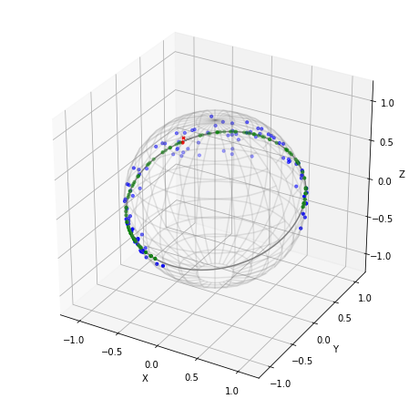
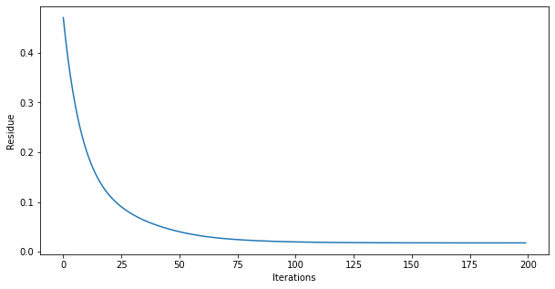
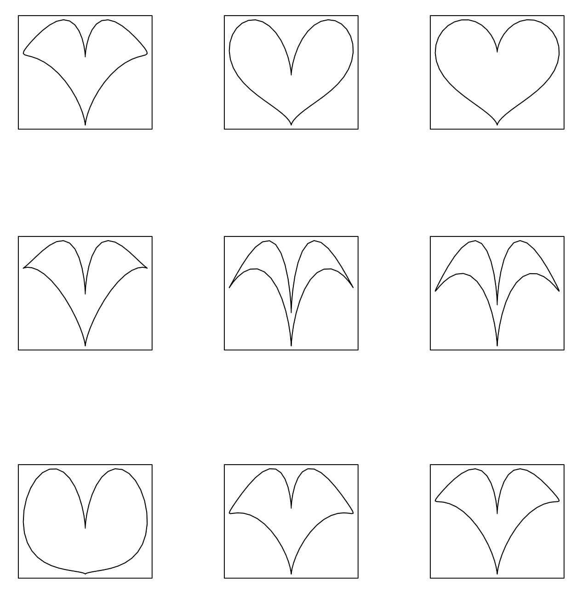
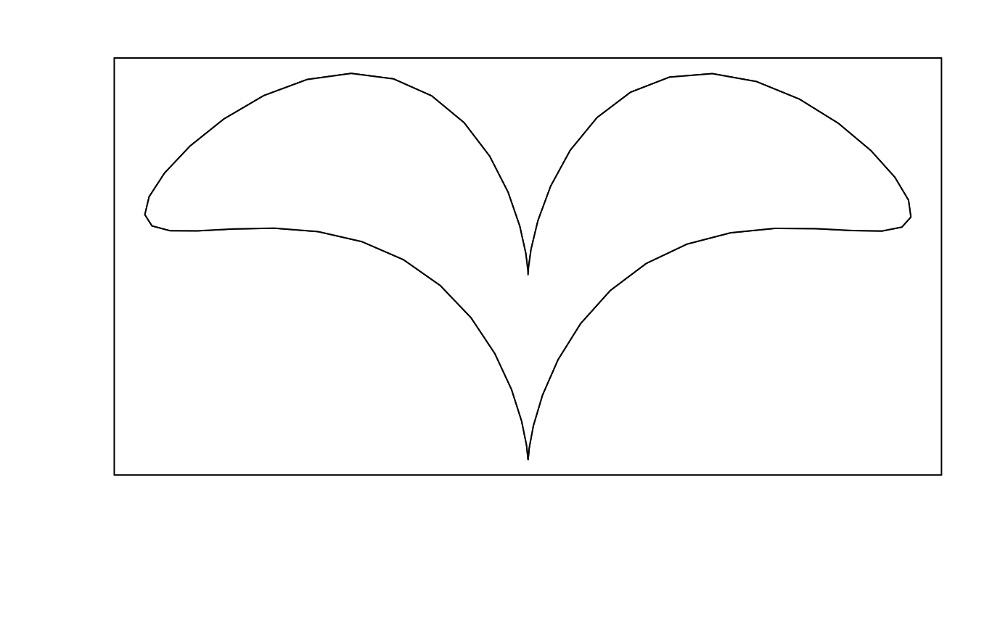

Chapter 3 Geodesics Regression
3.1 Motivation
Before we get into geodesics regression, let’s recall a simple fitting model that reflects similar idea: linear gression. Let \(\mathbf{X} \in \mathbb{R}^{n\times m}\) be a \(n\times m\) matrix consists of our data points that we want to model against \(\mathbf{y}\in\mathbb{R}^{n}\). The question we ask here is how to find an \(m^{\text{th}}-\)degree polynomial that is best-fit to our data (for example, if \(m=1\) then it’s called line of best fit). The linear regression model is given as: \[ \begin{aligned} \mathbf{y}_i &= \mathbf{x}_{i1}^T\beta_1 + \mathbf{x}_{i2}^T\beta_2 + \dots + \mathbf{x}_{in}^T\beta_n + \alpha_i +\epsilon_i\\ &= \mathbf{x}_i^T\beta + \alpha +\epsilon \\ \implies \mathbf{Y} &= \mathbf{X}{\beta} + {\alpha} + \epsilon \end{aligned} \]
We can quantify the notion of what is considered “best” for a fitting polynomial by choices of distance norm, for example, the method of least squares finds the the vertical distances of data points to the polynomial through the Eucledian norm. Here, the residual vector, \(\vec{e}\), represents error in calculation, so the optimalization problem is just for \(\beta\), that is the mean squared error estimator. \[\hat\alpha,\hat\beta= \arg\min_{\alpha,\beta} \sum_{i=1}^n\left(\mathbf{Y}- (\alpha+\mathbf{X}\beta) \right)^2\] \[\hat\epsilon= \mathbf{Y}- (\hat\alpha+\mathbf{X}\hat\beta) \]
However, what about cases that the space of data lies on a Riemannian manifold such as a high dimensional sphere? Or if the projection of data from \(\mathbb{R}^n\) on a manifold would better represent our data? By trying to find a polynomial lying on sub-dimensional space might be leading to over-fitting or resulted in a high variance result to determine. The key idea of geodesics regression is essential an analogy to linear regression, that is, finding the geodesics that fit data points lying on manifold domain the best. Here, the analogous version of a polynomial on \(\mathbb{R}^n\) is an exponential map.
3.2 Geodesics Regression
Definition (Exponential Map). Let \(\vec{\mathbf{v}}\in T_p\mathcal{M}\) be any vector in an arbitrary tangent plane of manifold \(\mathcal{M}\), then there exists a unique geodesic \(\gamma_v\) satisfying \(\gamma_v(0) = p\) and \(\gamma'_v(0) = \vec{\mathbf{v}}\). The exponential map with respect to \(\vec{\mathbf{v}}\) is given by: \[ \begin{aligned} \exp_p: T_p\mathcal{M} &\longrightarrow \mathcal{M}\\ \vec{\mathbf{v}} &\longmapsto \gamma_v(1) \end{aligned} \] Note that the “exponential” part in its name is not explicitly reflected by the our usual reference to the exponent \(e^x\), we can simply think of it as a map that sends a vector from the tangent space of a point on the manifold to a geodesics on the manifold. The logarithm map \(\log_p: \mathcal{M}\to T_p\mathcal{M}\) is the inverse of the exponent map that sends a geodesics on a manifold to the tangent space.
Figure 2.1: Tangent space at a point \(p\in\mathcal{M}\) with an exponential map visualized.Let’s re-define the notation \(\exp_p (\vec{\mathbf{v}}) = \exp(p,\vec{\mathbf{v}})\), then the regression module for \(\mathbf{X} \subset \mathbb{R}^n\) is given by: \[ \begin{aligned} \mathbf{y} = \exp(\exp(\alpha,\mathbf{X}\beta),\epsilon) \end{aligned} \] To think about this model, let’s us point out that an exponential map \(\exp(\alpha,\mathbf{X\beta})\) is simply the addition of vectors: \(\alpha+\mathbf{X}\beta\). Then \(\exp(\exp(\alpha,\mathbf{X}\beta),\epsilon) = \alpha+\mathbf{X}\beta+\epsilon\), thus it’s the linear regression “version” on the Riemannian manifold!

Figure 2.2: Geodesics regression on sample data lying on \(S^2\).3.3 Least Square Estimate
Let \((\mathbf{x_1}, \mathbf{y_1}), (\mathbf{x_2}, \mathbf{y_2}),\dots,(\mathbf{x_n}, \mathbf{y_n})\) be a set of points on a Riemannian manifold \(\mathcal{M}\) satisfying the geodesics model, \(\mathbb{E}[\mathbf{y} \vert \mathbf{x}]= \exp(\exp(\alpha,\mathbf{x}\beta),\epsilon)\), the least square estimate for \(\alpha\) and \(\beta\) is given by the optimalization problem: \[\hat\alpha,\hat\beta = \arg\min_{\alpha,\beta} \sum_{i=1}^n\left(\mathbf{Y}- \exp(\alpha,\mathbf{X}\beta)\right)^2\] Unlike linear regression, we cannot find a closed form solution for this problem, but we can approximate the solution with gradient descent.
The predicted value for \(\mathbf{y}\) and the residue are, respectively, given by: \[ \begin{aligned} \mathbf{\hat y}_i &= \exp(\hat\alpha,\mathbf{x}_i\hat\beta)\\ \hat\epsilon_i &= \log(\mathbf{\hat y}_i,\mathbf{y}_i) \\ \end{aligned} \]

Figure 2.3: Geodesics regression on sample data lying on \(S^2\).Though, one of the important task to do after finding a geodesics fit model is to determine whehther this relationship is statistically significant. Firstly, the Frechet variance \(\sigma^2\) of \(\{\mathbf{y}_i\}_{i=1,2,\dots,n}\) and of the residue terms are given by:
\[ \begin{aligned} \sigma^2 &= \frac{1}{n}\min_{z\in\mathcal{M}}\sum_{i=1}^n\rho^2(z,\mathbf{y}_i)\\ \text{Var}[\hat\epsilon] &= \frac{1}{n}\min_{z\in\mathcal{M}}\sum_{i=1}^n\rho^2(z,\hat\epsilon_i) \end{aligned} \] The coefficient of determination, \(R^2\), which denotes the proportion of global variance across \(\mathbf{y}_i\) that can attributed by the geodesics regression with \(\mathbf{x}\) is given bt: \[R^2 = 1-\frac{\sigma^2}{\text{Var}[\hat\epsilon]}\]
Figure 2.4: The residue plotted against increasing iterations of gradient descent.Example The \(R^2\) statistics of the geodesics regression on 100 sample points on \(S^2\) (figure 2.3) is 0.97. Then 97% of the variation in \(\mathbf{y}\) is explained by the geodesics regression with 3% is attributed by other factors. From figure 2.4, we can see that the the residue factors are relatively low as we induced more iterations in gradient descent. Thus, this geodesics regression is a good fit for our data set.
3.4 Application
In the original paper, Fletcher shows an application in medical image by projecting the shape of corpus callosum onto Kendall’s Shape Space. This is the complex projective space \(\mathbb{C}P^{k-2}\) (analogous to the real projective space \(\mathbb{R}P^{k-1}\)), which is a topological space constructed from removing the translation from the original space of data, and forming the quotient space from equivalence classes by identifying points that can be formed by scalings and rotations. Here, the shapes of the input lying on a high dimensional Riemannian manifold, which allows us to compute the geodesics regression and the mean shape!

Figure 2.5: The sample shape of “heart-”shape Bezier Splines.
Figure 2.6: The mean shape of “heart-”shape Bezier Splines sample.